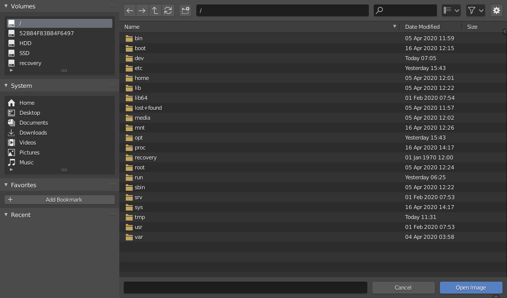
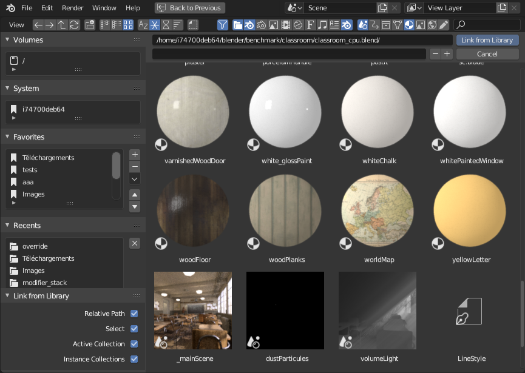

File Browser¶
File Browser được dùng trong mọi thao tác liên quan đến file, bao gồm:
Mở và lưu blend-file.
Duyệt nội dung của các blend-file khác khi append hoặc link data-block (xem Linked Libraries).
Import từ/export sang các định dạng file khác.
Cập nhật vị trí của các media đã import trước đó (hình ảnh, video, font...).
Cách dùng phổ biến nhất của editor này là thông qua các modal operator (như mở hay lưu một blend-file). File Browser sẽ xuất hiện trong một cửa sổ mới, chờ bạn chọn file, rồi tự đóng lại.
Bạn cũng có thể dùng File Browser như một editor thông thường, hiển thị thường trực. Thực tế, workspace Video Editing có sẵn đã dùng nó theo cách này. Nhờ đó bạn có thể kéo-thả media từ browser thẳng vào ví dụ 3D Viewport hoặc Video Sequencer, tiết kiệm được vài bước trung gian.

File Browser.¶
Interface¶
Main Region¶
Vùng chính liệt kê các file, thư mục hoặc nội dung blend-file. Di chuột tới một mục sẽ hiện tooltip với thông tin bổ sung.
Xem trước¶
Ở chế độ hiển thị Thumbnail, File Browser hỗ trợ xem trước nhiều loại, bao gồm:
Các định dạng hình ảnh và video
Font
Blend-file
Các Data-block nội bộ
Để có bản xem trước cho data-block, trước tiên chúng phải được tạo. Xem Ảnh xem trước của Blend-File.


File Browser ở chế độ Thumbnail.¶
Vùng Thư mục¶
Phía trên danh sách file có một ô văn bản hiển thị đường dẫn thư mục hiện tại, cùng các nút điều hướng.
- Previous Folder Backspace, Alt-Left, Mouse4
Di chuyển đến thư mục trước đó trong lịch sử điều hướng.
- Next Folder Shift-Backspace, Alt-Right Mouse5
Di chuyển đến thư mục kế tiếp trong lịch sử điều hướng.
- Parent directory P, Alt-Up
Di chuyển lên thư mục cha.
- Refresh File List R, NumpadPeriod
Làm mới thư mục hiện tại.
- Create New Directory Ctrl-Shift-N
Tạo một thư mục mới bên trong thư mục hiện tại.
- Directory Ctrl-L
Đường dẫn thư mục hiện tại. Tab sẽ tự động hoàn thành một đường dẫn có sẵn. Nếu bạn gõ một đường dẫn không tồn tại, bạn sẽ được nhắc tạo nó.
- Search Ctrl-F
Lọc các mục theo tên. Ký tự đại diện
*sẽ khớp với bất kỳ thứ gì, ví dụbl*ersẽ khớp với cảblenderlẫnblogger. Luôn luôn có một ký tự đại diện ngầm ở đầu và cuối văn bản tìm kiếm, nênblendercũng sẽ khớp vớitest_blender_file.blend. Trường này cũng có thể dùng để lọc theo một phần mở rộng file cụ thể (ví dụ.pngsẽ liệt kê mọi file PNG).
- Display Mode
Điều khiển cách các file được hiển thị.
- Vertical List:
Hiển thị các file và thư mục theo dạng danh sách dọc.
- Horizontal List:
Hiển thị các file và thư mục theo dạng danh sách ngang.
- Thumbnails:
Hiển thị bản xem trước.
Display Settings¶
- Size
Kích thước của thumbnail.
- Recursions
Số cấp thư mục được hiển thị cùng lúc dưới dạng phẳng.
- None:
Chỉ liệt kê nội dung của thư mục hiện tại.
- Blend File:
Liệt kê toàn bộ nội dung của một blend-file (chỉ khả dụng khi link hoặc append data-block).
- One Level:
Liệt kê nội dung của tất cả thư mục con, đệ quy một cấp.
- Two Levels:
Liệt kê nội dung của tất cả thư mục con, đệ quy hai cấp.
- Three Levels:
Liệt kê nội dung của tất cả thư mục con, đệ quy ba cấp.
Gợi ý
Hiển thị cùng lúc nhiều cấp thư mục có thể rất tiện, ví dụ để xem toàn bộ bộ sưu tập texture của bạn, ngay cả khi bạn đã sắp xếp chúng gọn gàng vào nhiều thư mục để tránh hàng trăm file nằm chung một chỗ.
Trong trường hợp Append/Link, việc hiển thị nội dung của toàn bộ blend-file cho phép bạn link các loại data-block khác nhau chỉ trong một thao tác.
Cảnh báo
Càng hiển thị nhiều cấp cùng lúc thì càng mất thời gian để liệt kê hết chúng.
- Sort By
Sắp xếp các mục theo một trong bốn cách:
- Name:
Sắp xếp danh sách file theo thứ tự alphabet.
- Extension:
Sắp xếp danh sách file theo phần mở rộng/kiểu file.
- Modified Date:
Sắp xếp file theo thời gian chỉnh sửa.
- Size:
Sắp xếp file theo dung lượng.
Cài đặt bộ lọc¶
Công tắc có biểu tượng hình phễu quyết định việc bật/tắt bộ lọc. Nút dropdown bên cạnh nó hiển thị các tùy chọn lọc.
- File Types
Lọc file theo nhóm, như thư mục, blend-file, hình ảnh, v.v.
- Blender IDs
Khi append hoặc link, bạn còn có thể lọc theo nhóm data-block, như scene, animation, material, v.v.
Vùng Thực thi¶
Các điều khiển này nằm ở dưới cùng của editor.
- File Name
Ô văn bản để chỉnh sửa tên và phần mở rộng của file. Ô này chuyển màu đỏ để cảnh báo bạn sắp ghi đè lên một file có sẵn. Tab sẽ tự động hoàn thành theo các tên có sẵn trong thư mục hiện tại.
- / (Tăng số trong tên file)
Thêm/tăng hoặc bỏ/giảm một con số ở cuối tên file (dùng ví dụ để lưu các phiên bản khác nhau của một file).
- Cancel Esc
Đóng File Browser và hủy thao tác.
- Confirm Return
Xác nhận thư mục và tên file hiện tại. Bạn cũng có thể nhấp đúp vào một file hoặc data-block trong vùng chính.
Vùng Truy cập Nhanh¶
Vùng bên trái chứa một số panel để nhảy nhanh đến những thư mục nhất định chỉ với một cú nhấp.
Các panel System và Recent có thể được ẩn thông qua tùy chỉnh Save & Load.
Bookmarks¶
Danh sách thư mục tùy chỉnh mà bạn thường dùng. Bạn có thể dùng các nút ở bên phải danh sách để thêm/bỏ/di chuyển các mục.
System¶
Các thư mục thông dụng như thư mục home trong Linux hoặc thư mục "Documents" trong Windows.
Volumes¶
Ổ đĩa và các điểm gắn kết mạng.
Recent¶
Các thư mục được truy cập gần đây.
Nhấp vào nút ở bên phải sẽ lộ tùy chọn Clear Recent Items để xóa sạch danh sách này.
Vùng Tùy chọn Operator¶
Vùng bên phải hiển thị các tùy chọn của operator đang gọi. Ngoài những thao tác phổ biến được liệt kê dưới đây, nhiều add-on import/export cũng đặt tùy chọn của chúng tại đó.
- Open, Save, Save As Blender File
Xem Mở & Lưu.
- Open, Replace, Save As Image
- Link/Append from Library
Xem Linked libraries.
Về tùy chọn chung:
- Relative Path
Xem Đường dẫn Tương đối.
Vùng Header¶
Header chỉ chứa hai menu: một là các điều khiển View chuẩn của editor, hai là danh sách vài operator Selecting nhằm giúp dễ khám phá hơn. Các menu này không hiển thị khi browser đang ở trong một cửa sổ modal.
Selecting¶
- Select
Nhấp LMB để chọn một mục duy nhất. Giữ thêm Ctrl để thêm/bỏ mục đó vào/khỏi vùng chọn, hoặc Shift để chọn một dải các mục.
- Dragging
Kéo bằng LMB sẽ bắt đầu một vùng chọn hình hộp.
Ghi chú
Bạn luôn có thể chọn nhiều mục trong File Browser -- mục được chọn sau cùng được xem là mục đang hoạt động. Nếu thao tác đang gọi chỉ nhận một đường dẫn duy nhất (như thao tác Open blend-file chính), nó sẽ lấy đường dẫn của mục đang hoạt động, còn các mục khác được chọn sẽ bị bỏ qua.
Các phím mũi tên¶
Bạn cũng có thể chọn/bỏ chọn file bằng cách "đi" qua chúng bằng các phím mũi tên:
Nhấn một phím mũi tên để chọn file kế tiếp/trước đó trong danh sách và bỏ chọn tất cả các file khác.
Giữ Shift để giữ nguyên vùng chọn hiện tại (và thêm vào nó).
Giữ Shift-Ctrl để đảo vùng chọn khi đi qua các file.
Nếu chưa có file nào được chọn, việc điều hướng bằng phím mũi tên sẽ chọn file đầu tiên hoặc cuối cùng trong thư mục, tùy theo hướng của mũi tên.
Editing¶
Các thao tác sau có sẵn trong menu ngữ cảnh của danh sách file.
- External
Dùng hệ điều hành để thực hiện một hành động trên file hoặc thư mục. Các tùy chọn liệt kê dưới đây có thể không có trên mọi hệ điều hành.
- Open:
Mở file này.
- Open Folder:
Mở thư mục này.
- Edit:
Chỉnh sửa file này.
- New:
Tạo một file mới thuộc kiểu này.
- Find File:
Tìm kiếm các file thuộc kiểu này.
- Show:
Hiển thị file này.
- Play:
Phát file này.
- Browse:
Duyệt file này.
- Preview:
Xem trước file này.
- Print:
In file này.
- Install:
Cài đặt file này.
- Run As User:
Chạy dưới một người dùng cụ thể.
- Properties:
Hiển thị thuộc tính hệ điều hành của mục này.
- Find in Folder:
Tìm kiếm các mục trong thư mục này.
- Command Prompt Here:
Mở một command prompt tại đây.
- Delete Delete, X
Xóa các file hoặc thư mục đang được chọn bằng cách chuyển chúng vào "thùng rác" của hệ điều hành.
Lưu ý: trên Linux, việc xóa thư mục yêu cầu KDE hoặc GNOME.
- Rename F2
Thay đổi tên của file hoặc thư mục đang được chọn.